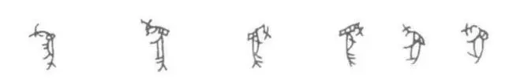

嵌绿松石象牙杯

- 国家博物馆有一件嵌绿松石象牙杯，实物有30厘米高，比我手中的保温杯还高一些。
- 杯子的把手，专业术语叫“鋬（pàn）”，是用榫卯结构插进去的。
- 整件作品制作精致、纹饰繁复，是商代象牙雕刻中最为名贵的精品。
- 那么问题来了，作为原材料的象牙是哪来的？
- 我们知道，故宫博物院也有不少象牙制品，最让人称奇的莫过于“象牙席”，即用象牙编织的席子，那是清代地方官从广东进贡过来的。
- 商代的象牙也是从南方得来的吗？
- 带铃铛的小象
- 用不着，这件象牙杯出土于河南省安阳市殷墟妇好墓。
- 我们有理由相信，当时的河南有大象。
- 一个直接的证据是，我们在殷墟挖到了不少大象的骨头。
- 最有趣的是一只小象，在脖子上还有个铃铛，你们是把它当宠物养吗？
- 邑：是不是与“予”很像？
- 豫的左边逐渐变为“予”
- 如果你去河南博物院，那有个常设展览，展出河南古代文明，它的标题就叫“大象中原”。
- 河南曾是一个盛产大象的地方，这一点从它的简称“豫”字就能看出来。
- “豫”字左边的“予”本来是“邑”，“豫”的本义是“产象之邑”。
- 甲骨文“为”
- 金文、石鼓文中的“为”
- 从文字学出发，还有一个常用字也能佐证古代有不少大象，那就是“为”字。
- “为”字繁体写作“為”，看甲骨文，就是一只手抓着大象的鼻子。
- 这个行为或许是在驯服大象，或许是让大象干活，之后引申出“行为”、“作为”的意思。
- 等到了战国，河南就没那么多大象了，《韩非子》里曾写到这么一件事：
- 人希见生象也，而得死象之骨，案其图以想其生也，故诸人之所以意想者皆谓之“象“也。
- 战国人已很少看到活着的大象，但土里还有不少大象的骨头，于是就对着骨头开始想象。
- 因为有“想象”这个行为，所以象多了“形状、样子”的意思。
- 韩非子之后，人们又造出“像”字，承担“相似、模拟”的意思，于是就有了好像、雕像这些词。
- 不过，这里有一个问题，为什么大象渐渐消失了？
- 一个原因是气候变迁。
- 按气象学家的说法，商朝前期处于全新世大暖期。
- 当时的华北平原湖无论是降水量还是气温都比现在高，所以活跃着亚洲象、马来貘、圣水牛、竹鼠等一系列亚热带动物。
- 到了商末周初，全新世大暖期结束，这些动物自然遭殃。
- 事实上，气候变化或许也是商朝灭亡的一个重要原因。
- 纣王出兵东南，可能是因为气候变迁，不得不寻找更好的生存空间。
- 与此同时，周人离豳迁岐，也可能是迫于干旱。
- 另一个原因则是人类行为。
- 滥垦滥伐、滥捕滥杀就不说了，《吕氏春秋》里有一个很有意思的说法：
- 商人服象，为虐于东夷，周公遂以师逐之，至于江南，乃为三象，以嘉其德。
- 也就是说商人曾组织象军，周朝兴起后，看不惯这一行为，就把大象赶到江南去了……